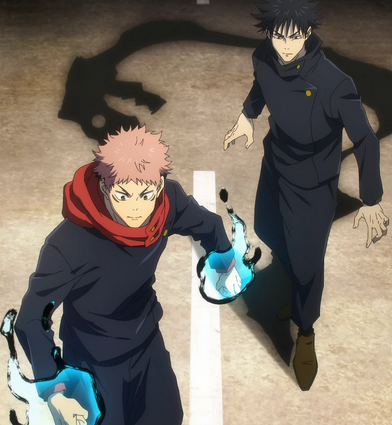
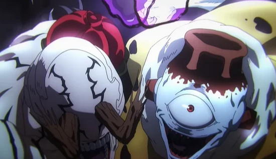
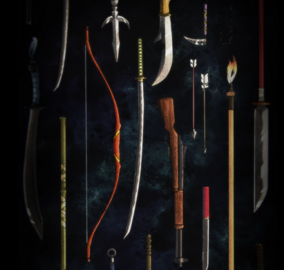
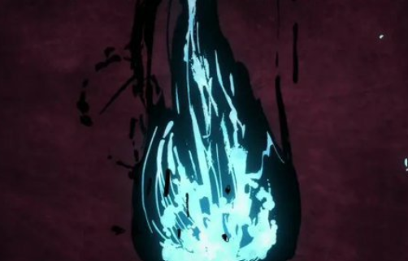
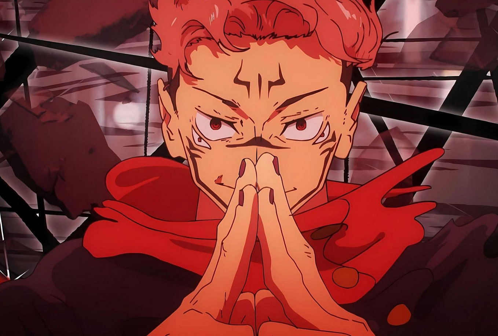
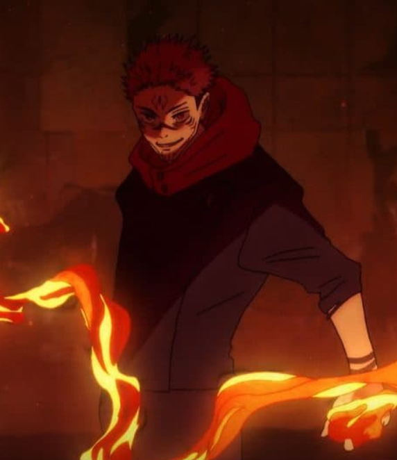
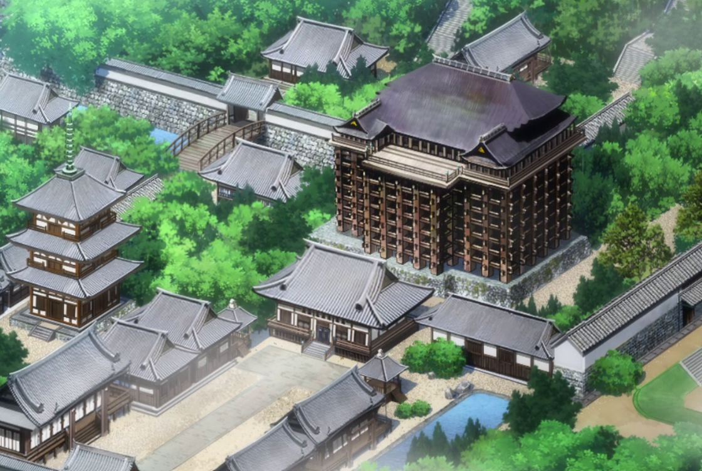
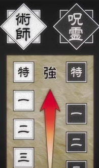

Der Gojo-Clan ist legendär – nicht nur wegen seiner Techniken, sondern auch, weil er Satoru Gojo hervorgebracht hat: Den ersten in 400 Jahren, der mit Sechs Augen (Rikugan) und der Unendlichkeit (Limitless) geboren wurde. Der Clan war immer stark, wurde aber durch Gojos Existenz praktisch unangreifbar.
Der Zenin-Clan steht für Macht, Tradition und brutale Meritokratie. Der Clan glaubt an die Überlegenheit starker Techniken und schaut auf nicht-verfluchte Familienmitglieder mit Verachtung herab. Frauen und Techniken wie die der Zehn Schattentechnik wurden nur akzeptiert, wenn sie mit Macht einhergingen. Doch diese Ideologie führte auch zur eigenen Zersetzung. Interne Konflikte, Neid und Machtgier sorgten für den Zerfall des Clans.
Der Kamo-Clan ist einer der ältesten und einflussreichsten Jujutsu-Clans Japans. Er ist berüchtigt für seine strenge Hierarchie, politische Kälte und seine Verbindung zur dunklen Vergangenheit der Jujutsu-Geschichte. Der Clan stellt Effizienz und Reinheit der Linie über alles – sogar über Menschlichkeit. Der Ruf des Kamo-Clans ist durch eine düstere Figur getrübt: Kamo Noritoshi (alt), besser bekannt als Kenjaku, ein abtrünniger Jujutsu-Zauberer, der für ethisch verwerfliche Experimente berüchtigt ist. Besonders bekannt ist sein grausames Experiment, bei dem er mit der Fluchgeburt Choso und seinen 'Brüdern' Hybridwesen aus Flüchen und Menschen erschuf.


Jujutsu Sorcerers
To be a jujutsu sorcerer as a profession, one generally possesses high levels of cursed energy and is born with the innate talent to use cursed techniques. This normally composes over eighty percent of a jujutsu sorcerer's skillset. Jujutsu sorcerer students receiving their training in the field.
Curse Users
A curse user is an evil human sorcerer who uses jujutsu with malintent. Naturally, they have existed as long as jujutsu sorcerers have, and were also prominent threats during the Heian Era alongside cursed spirits.
Cursed Weapons
Cursed weapons are tools imbued with cursed energy, capable of harming cursed spirits even without the wielder using techniques. They come in many forms, from simple blades to complex artifacts.
Cursed Energy
Cursed energy is born from negative human emotions. Sorcerers harness it to perform powerful techniques. Mastery of cursed energy is essential to survive in battles against curses.
Domain Expansion
A powerful technique where a sorcerer creates a space that boosts their abilities.
Cursed Technique
Unique abilities powered by cursed energy. Each user has their own style.
Jujutsu Organisations
Groups like Jujutsu High train sorcerers and fight cursed spirits.
Ranking System
Sorcerers and curses are ranked from Grade 4 to Special Grade based on power.
Kontrast
Sprache